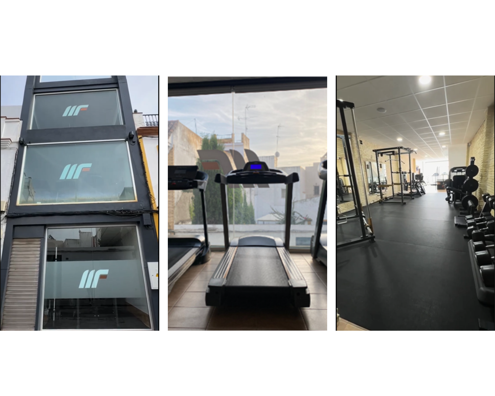

<section class="container">
  <div class="story">
    <div class="story__content">
      <span class="story__title">¿Quiénes somos?</span>
      <div class="story__text">
        <p>
          El gimnasio Marrufit se encuentra en el municipio de Los Palacios y
          Villafranca, perteneciente a la provincia de Sevilla. Desde su
          fundación en 2021, tras la pandemia de COVID-19, Marrufit ha sido un
          pilar en la comunidad local, proporcionando servicios de entrenamiento
          y bienestar.
        </p>
        <p>
          La iniciativa de crear Marrufit surgió de Soledad, quien durante la
          pandemia ganó una gran popularidad al compartir sus entrenamientos en
          directo a través de Instagram. La excelente acogida de estos
          entrenamientos en línea la impulsó a establecer su propio gimnasio.
        </p>
        <p>
          Inicialmente, Marrufit operaba en un local de alquiler y funcionaba
          bajo el nombre heredado del dueño anterior, "Golden Center".
        </p>
        <div class="story__image">
          
        </div>
        <p>
          Sin embargo, en 2024, gracias al esfuerzo y dedicación de Soledad, el
          gimnasio se trasladó a su propio local, consolidándose bajo su nueva
          marca "Marrufit". Este cambio no solo implicó un nuevo nombre, sino
          también el desarrollo de una identidad de marca propia, incluyendo el
          lanzamiento de una línea de ropa deportiva con el logo de Marrufit.
        </p>
        <p>
          El equipo de Marrufit está compuesto por tres empleados comprometidos
          y apasionados por el fitness y el bienestar. Soledad, la dueña, es
          entrenadora personal y nutricionista. Miguel, también entrenador
          personal, se encarga de guiar a los clientes en sus entrenamientos.
          María Luisa es la responsable de las clases de pilates y barre,
          aportando su experiencia y energía a estas disciplinas.
        </p>
        <p>
          El gimnasio ofrece una variedad de servicios enfocados en mejorar la
          salud y el bienestar de sus clientes. Estos servicios incluyen
          entrenamiento personalizado, clases grupales y asesoramiento
          nutricional.
        </p>
        <p>
          El gimnasio Marrufit está distribuido en tres plantas, cada una
          dedicada a diferentes tipos de entrenamiento.
        </p>
        <ul>
          <li>
            Planta Baja: Equipos de entrenamiento dedicados a la parte superior
            del cuerpo.
          </li>
          <li>
            Primera Planta: Equipos para el entrenamiento de piernas, cintas de
            correr y bicicletas.
          </li>
          <li>
            Segunda Planta: Espacio para clases colectivas como pilates, GAP y
            otras actividades grupales.
          </li>
        </ul>
        <div>
          
        </div>
      </div>
    </div>
  </div>
</section>
